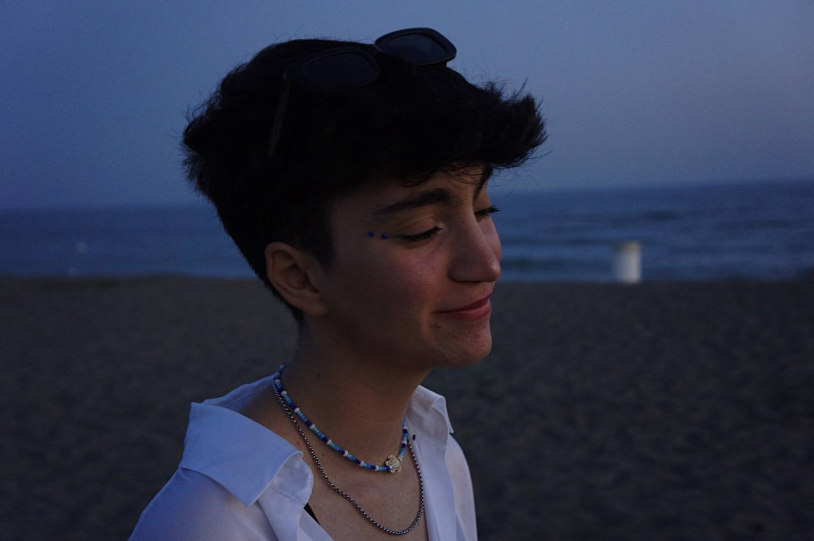
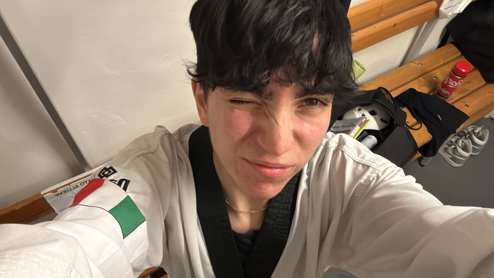
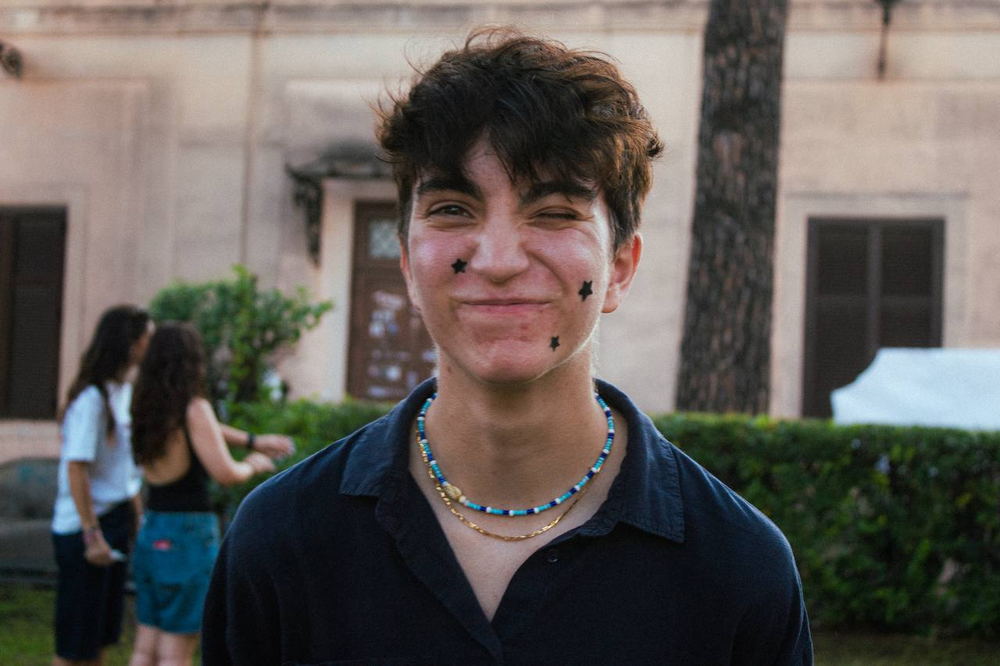

Bio
Una designer
fuori dagli schemi.
Roma · IED Media Design · Taekwondo · Psicologia Visiva

Dal linguaggio delle persone al linguaggio visivo
Ho studiato sociologia per tre anni a Roma Tre. Non è stata una deviazione, è stata la mia formazione più preziosa come designer. Capire come le persone costruiscono significato, come reagiscono agli stimoli visivi, come si formano le percezioni collettive: tutto questo è entrato nel mio modo di progettare.
Ogni mio lavoro parte da una domanda psicologica: cosa fa sì che qualcosa resti nella mente? Cosa fa scattare quel "oddio lo voglio anch'io"? La risposta sta nel colore, nella composizione, nella tensione tra ciò che si vede e ciò che si sente.

La disciplina che mi ha formata
Pratico taekwondo da quando avevo 5 anni. Ho una mia palestra a Roma dove insegno e mi alleno ogni giorno. Ho gareggiato in tutto il mondo e fatto parte della nazionale italiana. Il taekwondo mi ha insegnato che la perfezione tecnica non basta, serve intenzione, presenza, energia.
Quella stessa intenzione la porto nel design. Non faccio mai qualcosa "tanto per". Ogni scelta ha un perché. Ogni colore, ogni spazio, ogni font è una decisione consapevole.

Media Design allo IED di Roma
Oggi sono al primo anno di Media Design allo IED di Roma. È il posto dove tutto quello che ho vissuto, la sociologia, lo sport, la creatività visiva, trova finalmente un linguaggio unico. Studio la comunicazione visiva come sistema: come un'immagine parla, come un manifesto convince, come un sito racconta una storia.
Il blu è la mia firma visiva. Non per caso, è il colore della fiducia, della profondità, dell'intuizione. È il colore con cui vedo il mondo.